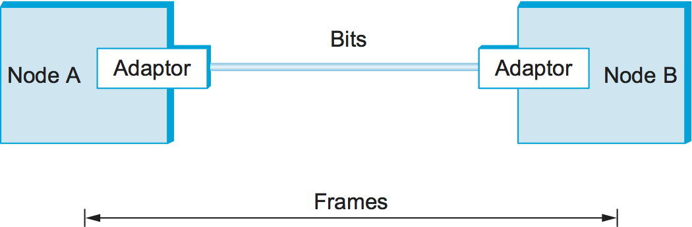
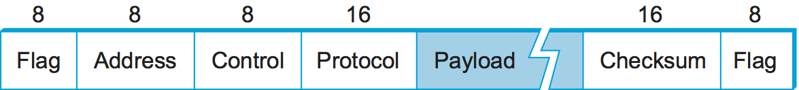
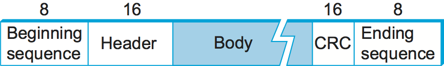
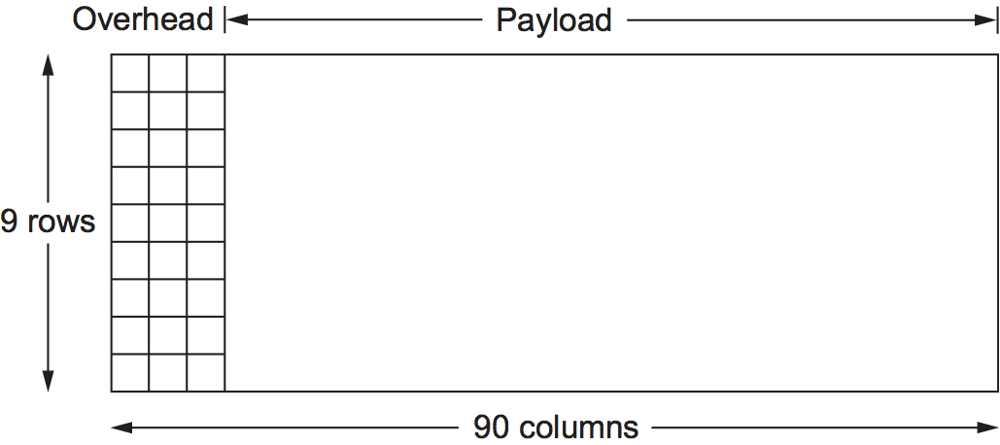
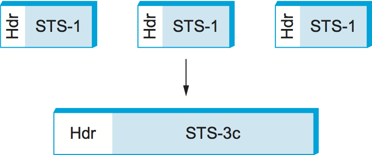
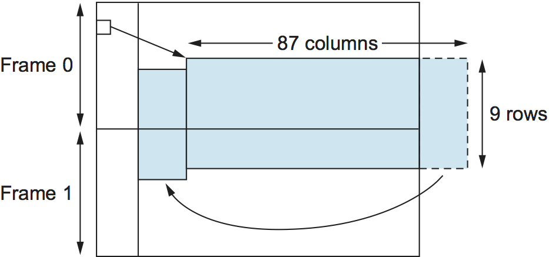

2.3 프레이밍
이제 어댑터에서 어댑터로 비트 시퀀스를 점대점 링크 위로 전송하는 방법을 살펴보았으니, 그림 26의 상황을 생각해 보자. 1장에서 언급했듯이 우리는 패킷 교환 네트워크에 초점을 맞추고 있으며, 이는 이 계층에서 비트 스트림이 아니라 데이터 블록(이 수준에서는 프레임이라 부름)이 노드 사이에 교환됨을 뜻한다. 노드들이 프레임을 교환할 수 있게 해 주는 것은 네트워크 어댑터이다. 노드 A가 노드 B로 프레임을 전송하고자 하면, 자신의 메모리에 있는 프레임을 전송하라고 어댑터에 지시한다. 그러면 링크를 통해 비트 시퀀스가 전송된다. 이후 노드 B의 어댑터는 링크에 도착한 비트 시퀀스를 모아 그에 대응하는 프레임을 B의 메모리에 저장한다. 정확히 어떤 비트 집합이 하나의 프레임을 이루는지, 즉 프레임이 어디서 시작하고 어디서 끝나는지를 판단하는 것이 어댑터가 직면하는 핵심 과제다.
{kind=link}

그림 26. 비트는 어댑터 사이를 흐르고, 프레임은 호스트 사이를 흐른다.
프레이밍 문제를 해결하는 방법은 여러 가지가 있다. 이 절에서는 설계 공간의 다양한 지점을 설명하기 위해 세 가지 서로 다른 프로토콜을 사용한다. 여기서는 점대점 링크의 맥락에서 프레이밍을 논의하지만, 이 문제는 Ethernet과 Wi-Fi 같은 다중 접속 네트워크에서도 반드시 해결해야 하는 근본적인 문제임을 기억하라.
2.3.1 바이트 지향 프로토콜 (PPP)
프레이밍에 대한 가장 오래된 접근법 가운데 하나는, 터미널을 메인프레임에 연결하던 시절까지 거슬러 올라가며, 각 프레임을 비트의 집합이 아니라 바이트(문자)의 집합으로 보는 것이다. 이러한 바이트 지향 프로토콜의 초기 예로는 IBM이 1960년대 후반에 개발한 Binary Synchronous Communication(BISYNC) 프로토콜과, Digital Equipment Corporation의 DECNET에서 사용된 Digital Data Communication Message Protocol(DDCMP)이 있다. 널리 사용되는 Point-to-Point Protocol(PPP)은 이 접근법의 비교적 최근 사례다. (한때 IBM과 DEC 같은 대형 컴퓨터 회사들은 고객을 위해 사설 네트워크도 구축했다.)
바이트 지향 프레이밍에는 큰 틀에서 두 가지 방식이 있다. 첫 번째는 프레임의 시작과 끝을 나타내기 위해 센티널 문자(sentinel characters)라고 하는 특수 문자를 사용하는 것이다. 기본 아이디어는 특별한 SYN(동기화) 문자를 보내 프레임의 시작을 표시하는 것이다. 그다음 프레임의 데이터 부분은 경우에 따라 또 다른 두 특수 문자 STX(start of text)와 ETX(end of text) 사이에 놓인다. BISYNC가 이 방식을 사용했다. 물론 센티널 방식의 문제는 특수 문자 중 하나가 프레임의 데이터 부분에도 나타날 수 있다는 점이다. 이 문제를 해결하는 표준적인 방법은 해당 문자가 프레임 본문에 나타날 때마다 앞에 DLE(data-link-escape) 문자를 붙여 그 문자를 “이스케이프”하는 것이다. DLE 문자 자체도 프레임 본문에서는 앞에 DLE를 하나 더 붙여 이스케이프한다. (C 프로그래머라면 이것이 문자열 안에서 따옴표를 백슬래시로 이스케이프하는 방식과 비슷하다는 점을 알아차릴 것이다.) 데이터 부분에 여분의 문자를 삽입하기 때문에 이 접근법을 흔히 문자 스터핑(character stuffing)이라 부른다.
센티널 값으로 프레임의 끝을 검출하는 대신 사용할 수 있는 대안은 프레임 헤더의 앞부분에 프레임 안의 바이트 수를 넣는 것이다. DDCMP가 이 방식을 사용했다. 이 방식의 한 가지 위험은 전송 오류가 count 필드를 손상시켜 프레임 끝을 정확히 검출하지 못하게 만들 수 있다는 점이다. (ETX 필드가 손상되면 센티널 기반 접근법에서도 비슷한 문제가 생긴다.) 이런 일이 발생하면 수신기는 잘못된 count 필드가 가리키는 만큼 바이트를 모은 뒤 오류 검출 필드를 사용해 프레임이 잘못되었음을 판단한다. 이를 프레이밍 오류라고 부르기도 한다. 그러면 수신기는 다음 SYN 문자가 나타날 때까지 기다렸다가 다음 프레임을 구성하는 바이트를 다시 모으기 시작한다. 따라서 프레이밍 오류 때문에 연속된 두 프레임이 모두 잘못 수신될 가능성이 있다.
여러 종류의 점대점 링크 위로 인터넷 프로토콜 패킷을 실어 나르는 데 널리 사용되는 Point-to-Point Protocol(PPP)은 센티널과 문자 스터핑을 사용한다. PPP 프레임 형식은 그림 27에 나와 있다.
{kind=link}

그림 27. PPP 프레임 형식.
이 그림은 이 책에서 프레임 또는 패킷 형식을 설명하기 위해 앞으로 여러 번 보게 될 첫 번째 그림이므로, 간단한 설명이 필요하다. 우리는 패킷을 이름이 붙은 필드들의 연속으로 나타낸다. 각 필드 위의 숫자는 그 필드 길이를 비트 단위로 나타낸다. 패킷은 가장 왼쪽 필드부터 전송된다는 점에 주의하라.
특수한 시작 문자이며 Flag 필드로 표시되는 값은 01111110이다. Address 필드와 Control 필드는 대개 기본값을 담기 때문에 크게 흥미롭지 않다. Protocol 필드는 디멀티플렉싱에 사용되며, IP 같은 상위 수준 프로토콜을 식별한다. 프레임 페이로드 크기는 협상할 수 있지만 기본값은 1500바이트다. Checksum 필드는 2바이트(기본값) 또는 4바이트 길이를 갖는다. 흔히 쓰이는 이름과 달리, 이 필드는 실제로는 체크섬이 아니라 CRC라는 점에 유의하라(다음 절에서 설명한다).
PPP 프레임 형식은 여러 필드 크기가 고정되어 있지 않고 협상된다는 점에서 특이하다. 이 협상은 Link Control Protocol(LCP)이라는 프로토콜이 담당한다. PPP와 LCP는 함께 동작한다. LCP는 PPP 프레임에 캡슐화된 제어 메시지를 전송한다. 이런 메시지는 PPP의 Protocol 필드에 있는 LCP 식별자로 표시된다. 그리고 이어서 그 제어 메시지에 담긴 정보를 바탕으로 PPP의 프레임 형식을 바꾼다. 또한 링크의 양쪽이 링크를 통한 통신이 가능하다고 감지했을 때(예를 들어 각 광 수신기가 자신이 연결된 광섬유로부터 들어오는 신호를 감지했을 때), 두 피어 사이의 링크를 설정하는 일에도 LCP가 관여한다.
2.3.2 비트 지향 프로토콜 (HDLC)
바이트 지향 프로토콜과 달리 비트 지향 프로토콜은 바이트 경계에 관심이 없다. 단지 프레임을 비트들의 집합으로 볼 뿐이다. 이 비트들은 ASCII 같은 문자 집합에서 온 것일 수도 있고, 이미지의 픽셀 값일 수도 있으며, 실행 파일의 명령어와 피연산자일 수도 있다. IBM이 개발한 Synchronous Data Link Control(SDLC) 프로토콜은 비트 지향 프로토콜의 한 예이며, 이후 ISO가 이를 High-Level Data Link Control(HDLC) 프로토콜로 표준화했다. 아래 설명에서는 HDLC를 예로 사용하며, 그 프레임 형식은 그림 28에 나와 있다.
HDLC는 구분되는 비트 시퀀스 01111110으로 프레임의 시작과 끝을 모두 표시한다. 이 시퀀스는 링크가 유휴 상태일 때에도 송신되어 송신기와 수신기가 클록을 계속 동기화할 수 있게 한다. 이런 점에서 두 프로토콜은 본질적으로 센티널 접근법을 사용한다. 그러나 이 시퀀스는 프레임 본문 어디에나 나타날 수 있다. 실제로 비트 01111110은 바이트 경계를 가로지를 수도 있다. 따라서 비트 지향 프로토콜은 DLE 문자에 대응하는 방법으로 비트 스터핑(bit stuffing)이라는 기법을 사용한다.
{kind=link}

그림 28. HDLC 프레임 형식.
HDLC 프로토콜의 비트 스터핑은 다음과 같이 동작한다. 송신 측에서는 메시지 본문(즉, 송신자가 구분용 01111110 시퀀스를 전송하려는 경우는 제외)에서 1이 연속으로 다섯 개 전송될 때마다 다음 비트를 보내기 전에 0을 하나 삽입한다. 수신 측에서는 1이 다섯 개 연속으로 도착하면 그다음 비트, 즉 다섯 개의 1 다음 비트를 보고 판단한다. 다음 비트가 0이면 그것은 스터핑된 비트였으므로 수신기는 이를 제거한다. 다음 비트가 1이면 두 가지 가능성 중 하나다. 프레임 종료 표식이거나, 비트 스트림에 오류가 삽입된 것이다. 수신기는 그다음 비트를 살펴봄으로써 이 두 경우를 구분할 수 있다. 그 비트가 0이면(즉, 마지막으로 본 8비트가 01111110이면) 프레임 종료 표식이다. 그 비트가 1이면(즉, 마지막으로 본 8비트가 01111111이면) 오류가 발생한 것이므로 전체 프레임을 폐기한다. 후자의 경우 수신기는 다시 수신을 시작하기 전에 다음 01111110을 기다려야 하며, 그 결과 연속된 두 프레임을 모두 받지 못할 가능성이 있다. 물론 오류 때문에 완전히 가짜인 프레임 종료 패턴이 만들어지는 경우처럼 프레이밍 오류가 탐지되지 않는 방법도 여전히 있지만, 그런 실패는 비교적 드물다. 오류를 견고하게 검출하는 방법은 뒤 절에서 논의한다.
비트 스터핑과 문자 스터핑의 흥미로운 특징은 프레임 크기가 프레임 페이로드로 보내는 데이터에 의존한다는 점이다. 실제로 어떤 프레임에 실릴 데이터가 임의적이라는 점을 생각하면, 모든 프레임을 정확히 같은 크기로 만드는 것은 불가능하다. (이를 스스로 확인해 보려면 프레임 본문의 마지막 바이트가 ETX 문자일 때 무슨 일이 생기는지 생각해 보라.) 모든 프레임의 크기가 동일하도록 보장하는 프레이밍의 한 형태는 다음 소절에서 설명한다.
2.3.3 클록 기반 프레이밍 (SONET)
프레이밍에 대한 세 번째 접근법의 예는 Synchronous Optical Network(SONET) 표준이다. 널리 받아들여지는 일반 용어가 마땅치 않기 때문에, 여기서는 이 접근법을 단순히 클록 기반 프레이밍이라고 부른다. SONET은 처음에 Bell Communications Research(Bellcore)가 제안했고, 이후 광섬유를 통한 디지털 전송을 위해 American National Standards Institute(ANSI) 아래에서 발전했으며, 그 뒤 ITU-T가 채택했다. SONET은 오랫동안 광 네트워크를 통한 장거리 데이터 전송의 지배적인 표준이었다.
조금 더 나아가기 전에 SONET에 대해 짚고 넘어가야 할 중요한 점은, 그 전체 규격이 이 책보다 훨씬 방대하다는 것이다. 따라서 아래 설명은 필연적으로 표준의 핵심만 다루게 된다. 또한 SONET은 프레이밍 문제와 인코딩 문제를 모두 다룬다. 더불어 전화 회사들에게 매우 중요한 문제, 즉 여러 저속 링크를 하나의 고속 링크로 다중화하는 문제도 다룬다. (실제로 SONET의 설계 상당 부분은 전화 통화에 전통적으로 사용되는 64kbps 채널을 대량으로 다중화해야 한다는 전화 회사들의 요구를 반영한다.) 먼저 SONET의 프레이밍 방식을 살펴보고, 그다음 다른 이슈들을 논의하겠다.
앞에서 논의한 프레이밍 방식들과 마찬가지로 SONET 프레임에도 수신기에게 프레임의 시작과 끝을 알려 주는 특별한 정보가 있다. 그러나 유사점은 거의 거기까지다. 특히 비트 스터핑을 사용하지 않으므로 프레임 길이는 전송되는 데이터에 좌우되지 않는다. 그렇다면 수신기는 각 프레임의 시작과 끝을 어떻게 알까? 이 질문을 가장 낮은 속도의 SONET 링크인 STS-1에 대해 생각해 보자. STS-1은 51.84 Mbps로 동작한다. STS-1 프레임은 그림 29에 나와 있다. 이 프레임은 9행 90바이트로 배치되며, 각 행의 처음 3바이트는 오버헤드이고 나머지는 링크를 통해 전송되는 데이터에 사용할 수 있다. 프레임의 처음 2바이트는 특별한 비트 패턴을 담고 있으며, 수신기는 이 바이트들 덕분에 프레임 시작 위치를 판단할 수 있다. 하지만 비트 스터핑을 사용하지 않기 때문에 이 패턴이 프레임의 페이로드 부분에 우연히 나타나지 않을 이유는 없다. 이를 방지하기 위해 수신기는 이 특별한 비트 패턴이 810바이트마다 한 번씩 일관되게 나타나는지를 살펴본다. 각 프레임 길이가 9 × 90 = 810바이트이기 때문이다. 이 패턴이 올바른 위치에 충분히 여러 번 나타나면, 수신기는 동기가 맞았다고 판단하고 프레임을 올바르게 해석할 수 있다.
{kind=link}

그림 29. SONET STS-1 프레임.
SONET의 복잡성 때문에 여기서 설명하지 않는 것 가운데 하나는 나머지 오버헤드 바이트 전체의 세부적인 용도다. 이런 복잡성의 일부는 SONET이 단일 링크 위에서만 동작하는 것이 아니라 통신 사업자의 광 네트워크 전반에 걸쳐 동작한다는 사실에서 비롯된다. (통신 사업자들이 실제로는 네트워크를 구현하고 있다는 사실은 잠시 덮어 두고, 여기서는 우리가 그들로부터 SONET 링크를 임대해 우리 자신의 패킷 교환 네트워크를 구축할 수 있다는 점에 초점을 맞추고 있음을 떠올려 보라.) 또 다른 복잡성은 SONET이 단순한 데이터 전송보다 훨씬 풍부한 서비스 집합을 제공한다는 사실에서 나온다. 예를 들어 SONET 링크 용량 가운데 64 kbps는 유지보수용 음성 채널을 위해 따로 할당된다.
SONET 프레임의 오버헤드 바이트는 앞 절에서 설명한 단순한 인코딩인 NRZ로 인코딩된다. 즉 1은 높은 신호이고 0은 낮은 신호이다. 그러나 수신기가 송신자의 클록을 복구할 수 있을 만큼 충분한 전이를 보장하기 위해, 페이로드 바이트는 스크램블된다. 이는 전송할 데이터와 잘 알려진 비트 패턴의 배타적 논리합(XOR)을 계산해 수행한다. 이 비트 패턴은 127비트 길이이며 1과 0 사이 전이가 충분히 많기 때문에, 이를 전송 데이터와 XOR하면 대체로 클록 복구에 필요한 전이를 충분히 갖는 신호가 만들어진다.
SONET은 여러 저속 링크를 다음과 같은 방식으로 다중화하는 것을 지원한다. 주어진 SONET 링크는 가능한 몇 가지 정해진 속도 중 하나로 동작하며, 그 범위는 51.84 Mbps(STS-1)에서 39,813,120 Mbps(STS-768)까지다.[1] 이 모든 속도가 STS-1의 정수배라는 점에 주목하라. 프레이밍 측면에서 중요한 점은 하나의 SONET 프레임이 여러 더 낮은 속도 채널의 서브프레임을 담을 수 있다는 것이다. 또 하나 관련된 특징은 각 프레임 길이가 125 μs라는 점이다. 이는 STS-1 속도에서는 SONET 프레임 길이가 810바이트이고, STS-3 속도에서는 각 SONET 프레임 길이가 2430바이트임을 뜻한다. 이 두 특징이 서로 잘 맞물린다는 점에 주목하라. 3 × 810 = 2430이므로, 세 개의 STS-1 프레임이 하나의 STS-3 프레임에 정확히 들어맞는다.
직관적으로 STS-N 프레임은 N개의 STS-1 프레임으로 이루어진 것으로 볼 수 있으며, 이 프레임들의 바이트가 서로 인터리브되어 있다. 즉 첫 번째 프레임에서 바이트 하나를 전송하고, 그다음 두 번째 프레임에서 바이트 하나를 전송하는 식이다. 각 STS-N 프레임의 바이트를 이렇게 인터리브하는 이유는 각 STS-1 프레임의 바이트가 균일한 간격으로 전송되도록 하기 위해서다. 즉 바이트가 125-μs 구간의 특정 \(1/N^{th}\) 부분에 몰려 나타나는 대신, 수신기에서는 부드러운 51 Mbps 속도로 도착하게 된다.
{kind=link}

그림 30. 세 개의 STS-1 프레임이 하나의 STS-3c 프레임으로 다중화됨.
STS-N 신호를 N개의 STS-1 프레임을 다중화하는 데 사용한다고 보는 것은 정확하지만, 이 STS-1 프레임들의 페이로드를 서로 이어 붙여 더 큰 STS-N 페이로드를 만들 수도 있다. 이러한 연결은 STS-Nc(concatenated)로 표시한다. 오버헤드의 한 필드가 이 목적에 사용된다. 그림 30은 세 개의 STS-1 프레임을 하나의 STS-3c 프레임으로 연결하는 경우를 개략적으로 보여 준다. SONET 링크가 STS-3이 아니라 STS-3c로 지정되었을 때의 의미는, 전자의 경우 사용자가 이 링크를 하나의 155.25 Mbps 파이프로 볼 수 있는 반면, STS-3는 실제로는 우연히 하나의 광섬유를 공유하는 세 개의 51.84 Mbps 링크로 보아야 한다는 점이다.
{kind=link}

그림 31. 위상이 맞지 않는 SONET 프레임.
마지막으로, 앞선 SONET 설명은 각 프레임의 페이로드가 프레임 내부에 완전히 포함된다고 가정한다는 점에서 지나치게 단순화되어 있다. (왜 그렇지 않겠는가?) 실제로는 방금 설명한 STS-1 프레임을 단지 프레임의 자리표시자로 보아야 하며, 실제 페이로드는 프레임 경계를 넘어 떠다닐 수 있다. 이 상황은 그림 31에 나와 있다. 여기서는 STS-1 페이로드가 두 개의 STS-1 프레임에 걸쳐 떠다니는 모습과, 페이로드가 오른쪽으로 몇 바이트 이동해 결과적으로 되감겨 있는 모습을 볼 수 있다. 프레임 오버헤드의 한 필드가 페이로드의 시작 위치를 가리킨다. 이 기능의 가치는 통신 사업자 네트워크 전반에서 사용되는 클록을 동기화하는 작업을 단순화한다는 데 있으며, 이는 통신 사업자들이 상당한 시간을 들여 신경 쓰는 문제다.